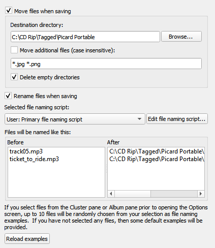

Options de nom de fichier¶
{kind=link}
Ces options déterminent la manière dont Picard gère les fichiers lorsqu’ils sont enregistrés avec des métadonnées mises à jour.
Déplacer les fichiers lors de l’enregistrement
Si elle est sélectionnée, cette option indique à Picard de déplacer vos fichiers audio vers un nouveau répertoire lorsqu’il les enregistre. Une utilisation pour cela est de garder votre travail organisé: tous les fichiers non étiquetés sont sous « Répertoire A », et lorsque Picard les marque, il les déplace vers « Répertoire B ». Lorsque « Répertoire A » est vide, votre travail de marquage est terminé.
Si cette option n’est pas cochée, Picard laissera les fichiers dans le même répertoire lorsqu’ils seront enregistrés.
Notez que les options « Renommer les fichiers » et « Déplacer les fichiers » sont indépendantes les unes des autres. «Renommer les fichiers» fait référence à Picard changeant les noms de fichiers, généralement en fonction des noms d’artiste et de piste. « Déplacer les fichiers » fait référence au déplacement de fichiers Picard vers de nouveaux répertoires, en fonction d’un répertoire parent et de sous-répertoires spécifiés, généralement basés sur le nom de l’artiste de l’album et le titre de la sortie. Cependant, ils utilisent tous les deux la même «chaîne de dénomination de fichier». « Déplacer les fichiers » utilise la partie vers le haut jusqu’au dernier “/”. « Renommer les fichiers » utilise la partie après le dernier “/”.
Répertoire de destination
Cela spécifie le répertoire parent de destination vers lequel les fichiers sont déplacés lorsqu’ils sont enregistrés, si l’option « Déplacer les fichiers lors de l’enregistrement » est sélectionnée. Si vous utilisez le répertoire « . » les fichiers seront déplacés par rapport à leur emplacement actuel. S’ils sont déjà dans une sorte de structure de répertoires, cela ne fera probablement pas ce que vous voulez!
Déplacer des fichiers supplémentaires
Entrez des modèles qui correspondent à tous les autres fichiers que Picard doit déplacer lors de l’enregistrement de fichiers musicaux (par exemple: « folder.jpg », « *. png », « *. cue », « *. log »). Les motifs sont séparés par des espaces. Lorsque ces fichiers supplémentaires sont déplacés, ils se retrouveront dans le répertoire de publication avec vos fichiers musicaux. Dans un modèle, le caractère « * » correspond à zéro ou plusieurs caractères. Un autre texte, comme « .jpg », correspond à ces caractères exacts. Ainsi « *.jpg » correspond à « cover.jpg », « liner.jpg », « a.jpg » et « .jpg », mais pas à « nomatch.jpg2 ».
Supprimer les répertoires vides
Lorsqu’il est sélectionné, Picard supprimera les répertoires devenus vides une fois le déplacement terminé. Laissez cette case non cochée si vous voulez que Picard laisse la structure du répertoire source inchangée. Cochez cette case peut être pratique si vous utilisez l’option « déplacer les fichiers » pour organiser votre travail. Un répertoire vide n’a plus de travail à faire, et la suppression du répertoire le clarifie.
Renommer les fichiers lors de l’enregistrement
Sélectionnez cette option pour permettre à Picard de modifier les noms de fichier et de répertoire de vos fichiers lorsqu’il les enregistre, afin de rendre les noms de fichier et de répertoire cohérents avec les nouvelles métadonnées.
Remplacer les caractères non ASCII
Sélectionnez cette option pour remplacer les caractères non ASCII par leur équivalent ASCII (par exemple: “á”, “ä” et “ǎ” par “a”; “é”, “ě” et “ë” par “e”; “æ” avec « ae »). Plus d’informations sur les caractères ASCII peuvent être trouvées sur Wikipedia.
Compatibilité Windows
Cette option indique à Picard de remplacer tous les caractères incompatibles avec Windows par un trait de soulignement. Ceci est activé par défaut sur les systèmes Windows, sans option de désactivation.
Nommez des fichiers comme celui-ci
Une zone d’édition qui contient une chaîne de mise en forme qui indique à Picard quel doit être le nouveau nom du fichier et ses répertoires contenant en termes de valeurs de métadonnées diverses. La chaîne de formatage est dans langage de script de Picard où le texte bleu foncé commençant par un “$” est un nom de la fonction et noms en bleu clair entre les signes “%” sont ceux de Picard tag et noms de variable, et est généralement appelé « script de nommage de fichier ». Notez que l’utilisation d’un “/” dans la chaîne de formatage sépare le répertoire de sortie du nom de fichier. La chaîne de mise en forme peut contenir n’importe quel nombre de caractères “/”. Tout ce qui précède le dernier “/” est l’emplacement du répertoire, et tout ce qui se trouve après le dernier “/” devient le nom du fichier.
Il n’y a qu’un seul script de dénomination de fichier défini dans les paramètres d’un utilisateur, bien qu’il puisse varier d’un simple script sur une ligne tel que
%album%/%title%à un script très complexe utilisant différents formats de dénomination de fichier basés sur différents Critères. Dans tous les cas, les fichiers seront enregistrés en utilisant le texte sorti par le script.Les scripts sont souvent abordés dans le MetaBrainz Community Forum, et il existe un fil de discussion spécifique à la dénomination de fichier et les extraits de script.
Note
Les nouveaux ensembles de balises ou les balises modifiées par le script de dénomination de fichier ne seront pas écrites dans les métadonnées des fichiers de sortie.